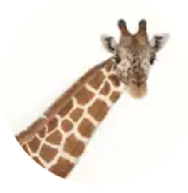

Datos principales
- Clase: Mamífero
- Vida media: 25 años
- Tamaño: 4.27 a 5.79 metros
- Peso: 793 a 1270 kilos
Descripción
La jirafa es el animal terrestre más alto del mundo. Su largo cuello le permite alcanzar hojas en lo alto de los árboles que otros animales no pueden.
Características
- Hábitat: Sabanas africanas
- Alimentación: Herbívora, principalmente hojas de acacia
- Comportamiento: Animal social, vive en grupos
- Curiosidad: Duermen menos de 2 horas al día
